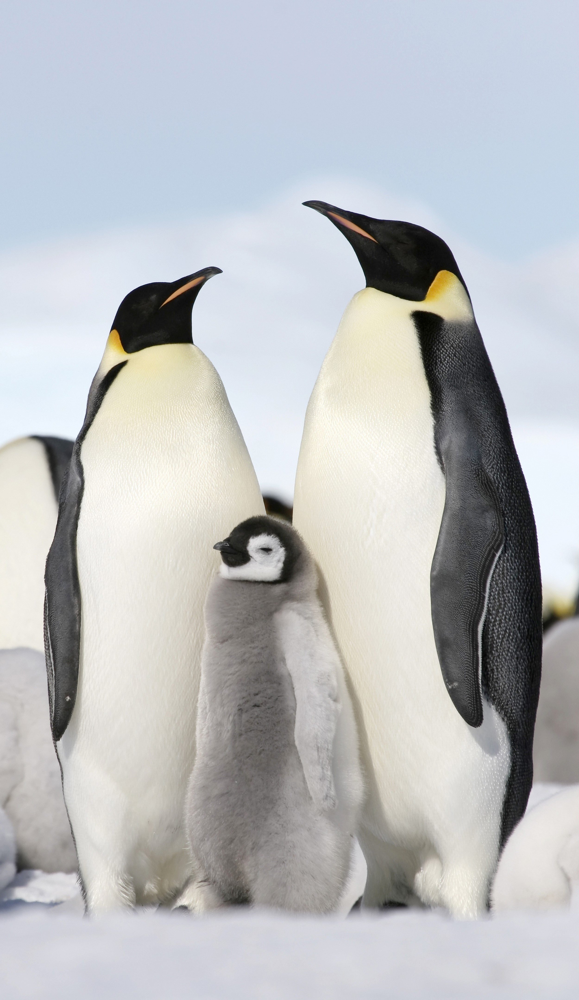
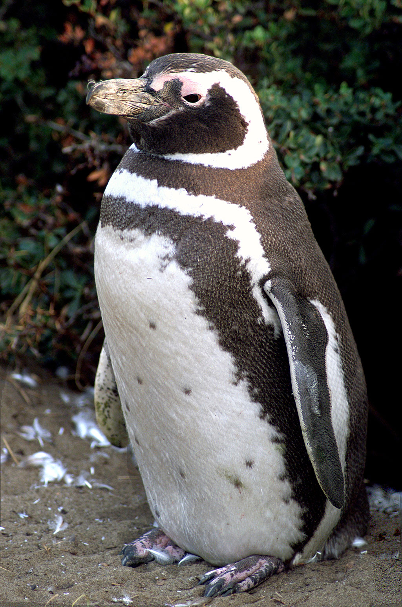
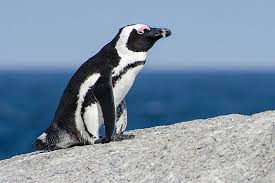
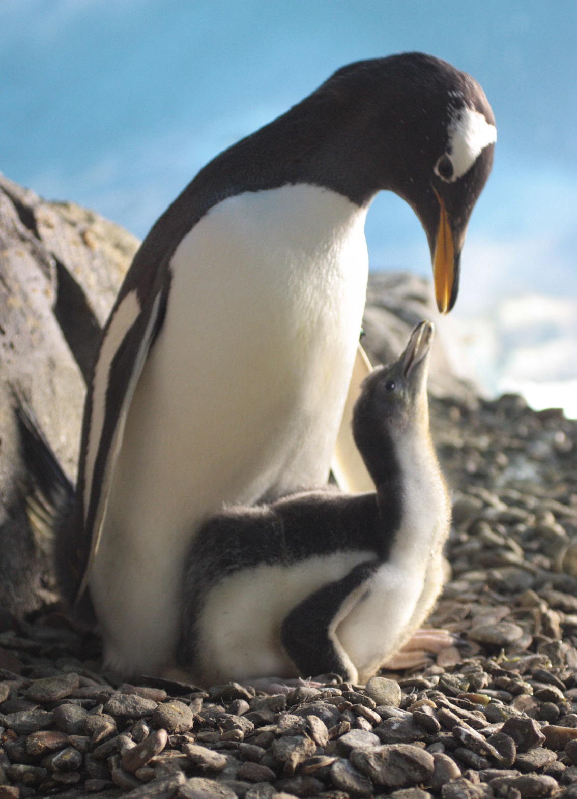

Conheça as Espécies
Os reis do gelo em toda sua diversidade

Pinguim-imperador
Antártida
O maior de todos os pinguins, conhecido por sua incrível resistência ao frio extremo e por suas longas caminhadas no gelo.

Pinguim-de-adélia
Antártida e ilhas próximas
Pequenos e agitados, são conhecidos por seus ninhos de pedras e comportamento curioso.

Pinguim-rei
Ilhas subantárticas
Segundo maior pinguim, com cores vibrantes e um porte majestoso que justifica seu nome.

Pinguim-de-magalhães
América do Sul
Vive em climas mais temperados e migra anualmente entre Argentina e Brasil.

Pinguim-africano
África do Sul e Namíbia
O único pinguim que vive no continente africano, adaptado a climas mais quentes.

Pinguim-gentoo
Ilhas subantárticas
Reconhecido pelo chamativo bico vermelho e por ser o pinguim mais rápido debaixo d'água.